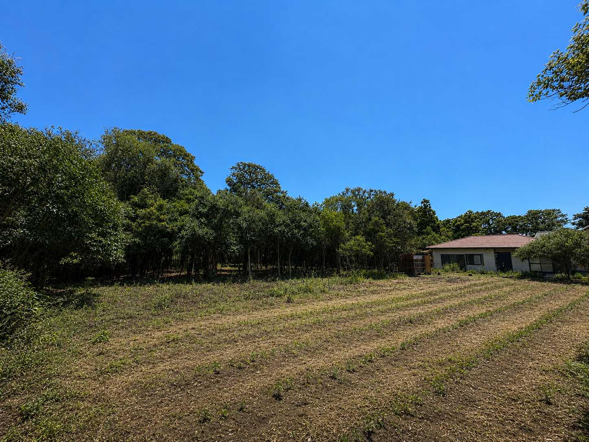
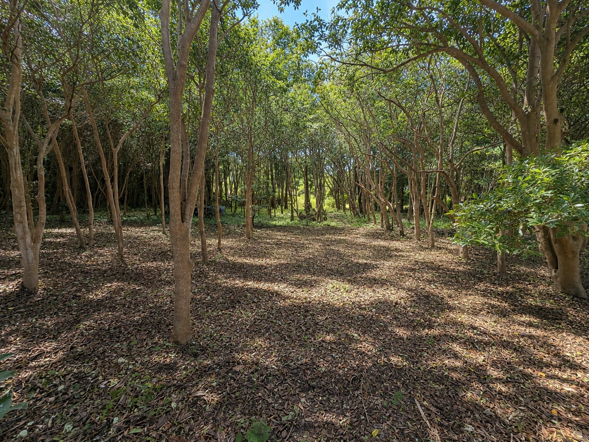

Concept
籠とは
「籠」は、こもる、包まれるという意味の漢字です。ここは、大切な人だけで静かに過ごせる場所です。
なぜ、一棟貸し切りなのか
普段の生活では、大切な時間も通知や予定、周囲の目によって邪魔されがちです。
籠 —RAW— は一棟貸し切りのため、他の宿泊客はいません。周囲に気を遣う必要がなく、大切な人たちだけでゆっくり過ごせます。
籠が、できること
籠 —RAW— では、何もしないで過ごすことも、誰にも会わずに過ごすこともできます。
家、照明、お風呂、水洗トイレなど、必要な設備はひと通り揃っています。すぐ外には、手入れされたフィールドが広がっています。
快適な設備が整っている一方で、自然もそのまま残されています。


「しない」という、設計
テーマパークのように、やることが決められた施設ではありません。ここでは、何をしてもかまいません。
火を焚いたり、虫を追いかけたり、木に登ったり、ただ寝転んだりすることができます。決まったプログラムはなく、過ごし方は自分たちで自由に決められます。
離島という、距離
東京から船で、約1時間45分の場所にあります。
気軽に行ける距離にありながら、日常からしっかり離れられる場所です。
この場所が、向く人
気づけば、それぞれがスマートフォンの画面を見ていて、一緒にいる時間がすれ違ってしまっている。そんな方に向いています。
日々の忙しさに追われて、大切な人と過ごす時間を後回しにしてしまっている方にもおすすめです。
特に何をするわけでなくても、ただ一緒にいたいと感じたときに、籠 —RAW— は利用できます。